莫伊图拉
01简介与目标
在古爱尔兰全境拥有最强影响力者获胜。每位玩家控制一个氏族（白或黑），三个敌方氏族合并构成与两位玩家竞争的第三派系。
每个地区在每个时代结束时结算一次：该地区内单位数最多与第二多的派系得分。两个时代结束后，分数最高的派系获胜。
本规则涵盖第一次游戏所需的全部内容。追加规则与选项见第 11–12 节；玛格梅尔（Mag Mell）扩展见第 13 节；单人／合作玩法见第 14 节。
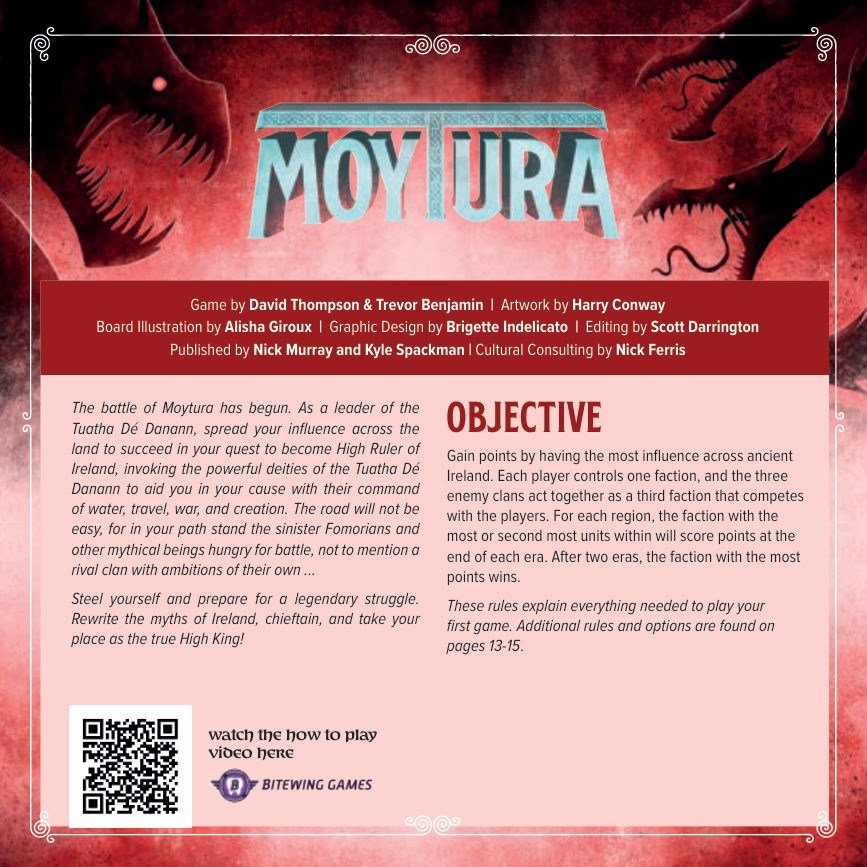
02配件
| 配件 | 数量 | 说明 |
|---|---|---|
| 版图 | 1 张 | 印有 11 个地区、小径、海与湖泊、神祇展示区、分数轨 |
| 信徒 | 92 个 | 黑、白各 46 个 |
| 玩家标记 | 18 个 | 兼作分数标记与升级标记 |
| 敌方要塞标记 | 3 个 | 每个敌方氏族 1 个 |
| 崇拜标记 | 25 个 | 用于付费选板块、兑换与计分平手判定 |
| 标记 | 11 个 | 辅助记忆用（标记待扩张格、待计分地区等） |
| 敌方分数标记 | 2 个 | 红色，敌方派系共用 |
| 神祇板块 | 4 块 | 埃里乌（Ériu）、波安德（Bóand）、莫里甘（Morrigan）、达格达（Dagda） |
| 敌方单位 | 60 个 | 双面，每个氏族 20 个 |
| 敌方卡 | 24 张 | 每个氏族 4 张 |
| 玩家帮助卡 | 4 张 | 每位玩家 2 张 |
| 地图卡 | 3 张 | 双面，共 6 种地图设置 |
| 图阿萨·德·达南卡 | 1 张 | 扩张规则：向与起点相邻的目标扩张，并从供应区取 1 枚崇拜标记 |
信徒、敌方单位、崇拜标记与玩家标记不设数量上限。用尽时请自行寻找合适的替代物。
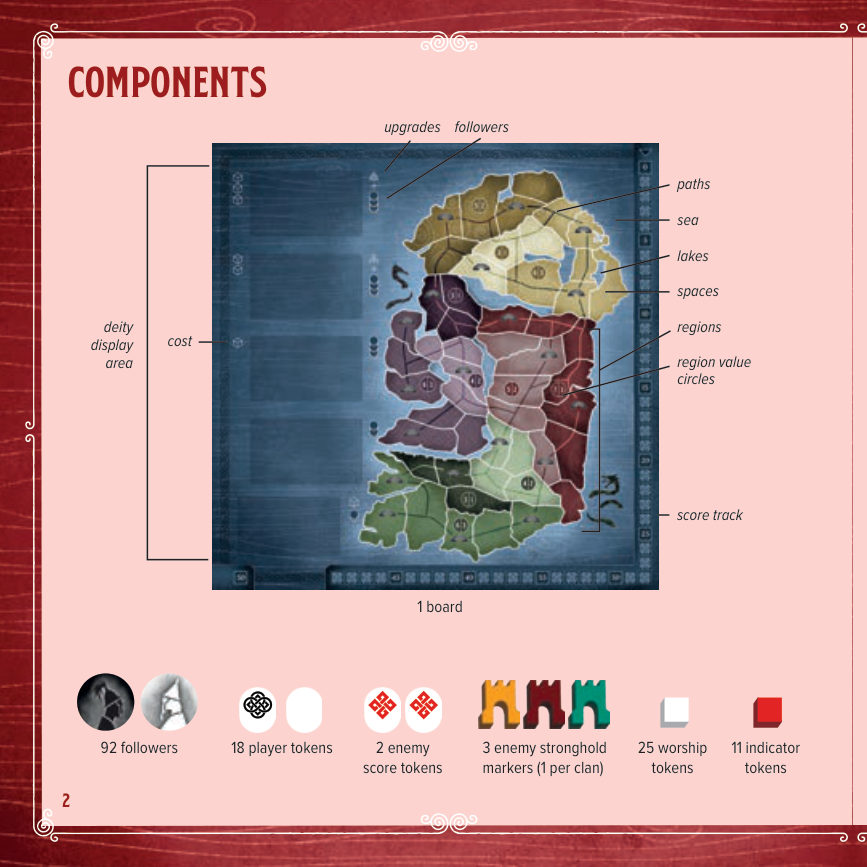
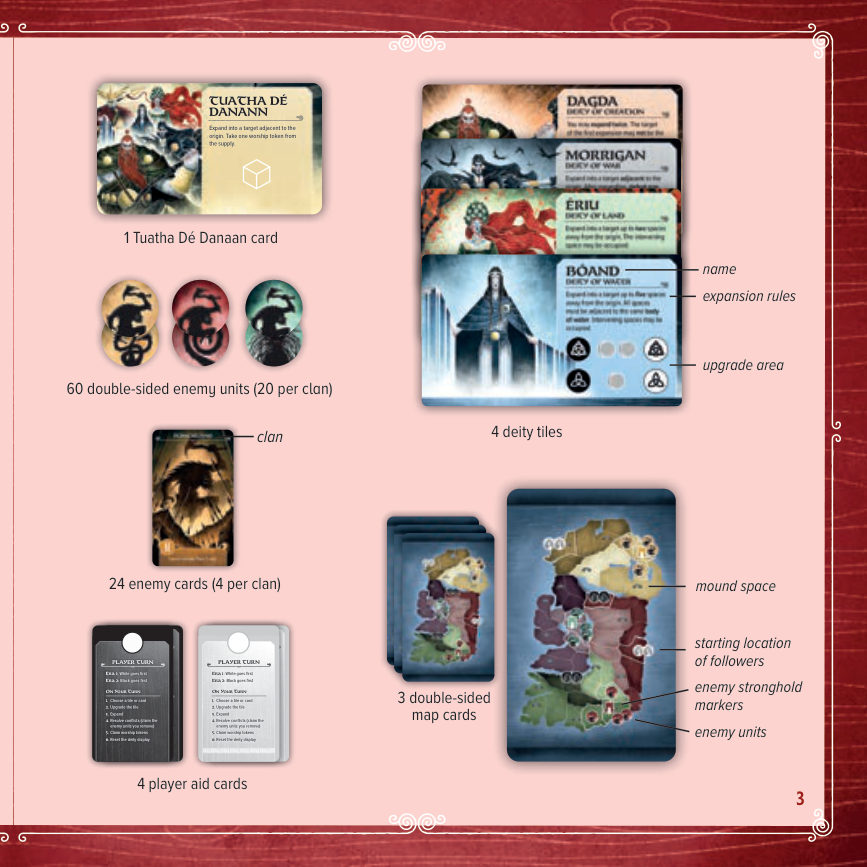
03版图要素
| 要素 | 原文 | 说明 |
|---|---|---|
| 小径 | paths | 连接相邻格子的虚线，决定陆路扩张与敌方扩张的连通条件 |
| 海 | sea | 环绕爱尔兰的水域，波安德与奥伊利菲什都依赖它 |
| 湖泊 | lakes | 内陆水域，与海一样算「同一片水域」的判定对象 |
| 格子 | spaces | 放置信徒与敌方单位的最小单位 |
| 地区 | regions | 全图共 11 个，是计分单位；一个地区含多个格子 |
| 地区分值圆 | region value circles | 印在该地区上，形如「6 | 3」，即第一名 6 分、第二名 3 分 |
| 消耗 | cost | 神祇展示区每格左侧的圈，选择该格需付的崇拜标记数 |
| 神祇展示区 | deity display area | 版图左侧竖排 5 格：最下 1 格放图阿萨·德·达南卡，其上 4 格放神祇板块 |
| 分数轨 | score track | 沿版图边缘，0–50 |
| 升级区 | upgrades | 神祇板块上的一排圆圈，放玩家标记表示已升级 |
| 信徒 | followers | 展示区每格右侧印有数量图标，即选择该格可放置的信徒数 |
04游戏设置
- 版图：把版图放在桌面中央。
- 地图卡：取出新手地图设置（注意卡为双面，该设置直接印出信徒与敌方单位的位置）。其余地图卡放回盒中。
- 信徒（每位玩家）：选择黑或白，取该色 46 个信徒，在地图卡标示的每个起始格各放 2 个，其余放在自己面前的供应区。
- 敌方要塞标记：把三个弗摩尔氏族的要塞标记放在地图卡标示的格子上。
- 敌方单位：把所有敌方单位翻到弗摩尔面朝上，按三个氏族（颜色）分开。这些单位整局都保持弗摩尔面朝上。每个氏族取 4 个单位放到地图卡标示的格子上，其余放在版图旁的供应区。
- 敌方卡：把三个弗摩尔氏族的卡洗混，面朝下各发 5 张，分别作为第一时代与第二时代的抽牌堆。剩余 2 张与其他敌方卡一起放回盒中。
- 神祇板块与图阿萨·德·达南卡：把图阿萨·德·达南卡正面朝上放在展示区最下面一格；洗混 4 块神祇板块，正面朝上放在其余 4 格，构成神祇展示区。
- 崇拜标记：每位玩家面前放 2 枚作为个人供应区；每个无人占据的土丘格各放 1 枚；其余放在图阿萨·德·达南卡指定的公共供应区。
- 玩家与敌方标记：每位玩家的 1 枚标记放在分数轨 0 格，其余放个人供应区；敌方分数标记放在分数轨 0 格（第二枚先放在分数轨旁待用）。
- 标记：放在版图旁备用。
- 玩家帮助卡：每位玩家拿取自己颜色的 2 张，放在手边。
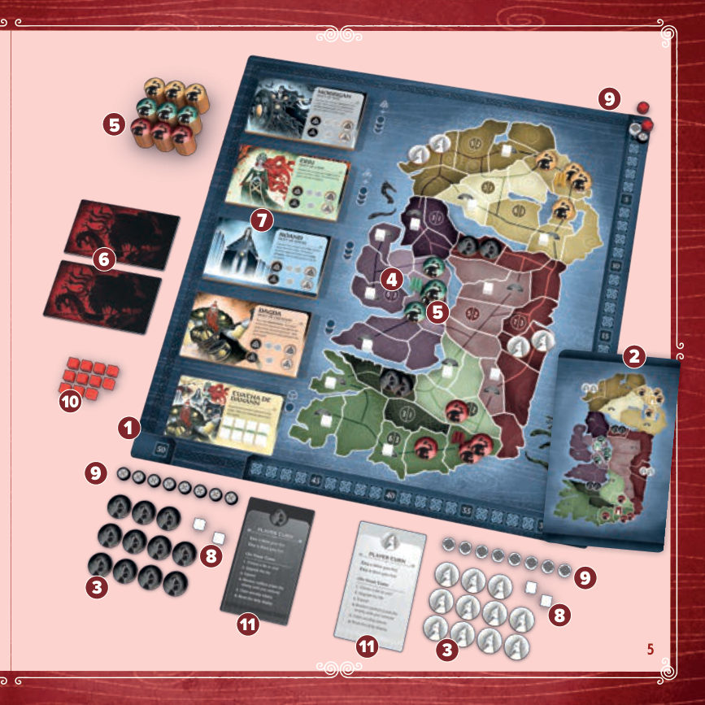
05游戏流程总览
游戏共 10 轮。每轮分三个回合，依次为：
- 先手玩家的回合
- 后手玩家的回合
- 敌方的回合
每 5 轮构成一个时代。第 5 轮与第 10 轮结束时（即最后一敌方卡被翻开并结算完毕后），双方与敌方按版图上的地区控制情况计分。第二时代计分后游戏结束。
玩家回合的先后由时代决定：第一时代白方先手，第二时代黑方先手。
轮次结构
| 阶段 | 轮次 | 每轮内容 | 结束行动 |
|---|---|---|---|
| 第一时代 | 第 1–5 轮 | 白方回合 → 黑方回合 → 敌方回合 | 第 5 轮末尾按 11 个地区计分 |
| 第二时代 | 第 6–10 轮 | 黑方回合 → 白方回合 → 敌方回合 | 第 10 轮末尾计分，随后终局判定 |
06玩家回合
轮到你时，按顺序执行以下六步：① 选择板块或卡 → ② 升级板块 → ③ 扩张 → ④ 结算冲突 → ⑤ 认领崇拜标记 → ⑥ 重置神祇展示区。
6.1 选择板块或卡
从神祇展示区中选择一块板块或一张卡。图阿萨·德·达南卡与最下面（第一块）神祇板块永远可以免费选择。若想选更靠上的神祇板块，每跳过一格就要支付 1 枚崇拜标记：第二块神祇板块付 1 枚，第三块付 2 枚，第四块付 3 枚。支付的崇拜标记放回公共供应区。
| 展示区格位（自下而上） | 可放内容 | 崇拜标记花费 |
|---|---|---|
| 最下格 | 图阿萨·德·达南卡 | 0 |
| 第一块神祇板块 | 四块神祇板块之一 | 0 |
| 第二块神祇板块 | 四块神祇板块之一 | 1 |
| 第三块神祇板块 | 四块神祇板块之一 | 2 |
| 第四块神祇板块（最上） | 四块神祇板块之一 | 3 |
6.2 升级板块
如果你选择的神祇板块位于展示区最上面两格之一，取一枚自己的玩家标记，放在该板块上与它在展示区位置对应的升级圈上。
如果该位置已经有你的升级标记，就不再放。每块神祇板块最多升级两次：一次是你第一次在第四格（最上格）选择它时，另一次是你第一次在第三格选择它时。
诺拉（黑）付 1 枚崇拜标记，选择第二块神祇板块埃里乌（Ériu）。她此前已在两个回合中升级过这块板块，因此本次共放置 6 名信徒（该展示位 3 名 + 两次升级共 3 名）。
6.3 扩张
选择一个起点格与一个目标格。起点必须含有一个或多个你的信徒。目标不能含有任何一方的信徒，也不能含有敌方要塞标记；可以含有敌方单位。
起点与目标之间的最大距离取决于你选的板块或卡：
- 图阿萨·德·达南：1 格。
- 神祇板块：1 至 5 格，具体见第 7 节。
从自己的供应区取出对应数量的信徒放到目标格：
- 选图阿萨·德·达南卡：取 1 名信徒。
- 选神祇板块：取「所选展示位数值 + 该板块上已有升级数值」之和名信徒，即 2–6 名。
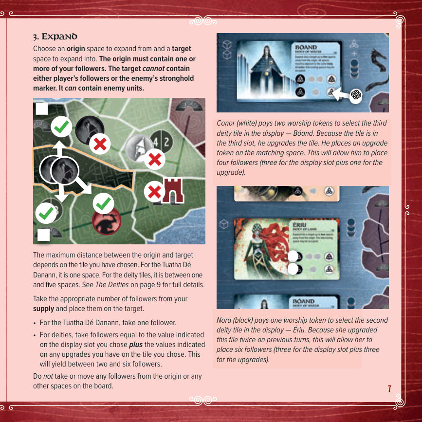
6.4 结算冲突
如果你扩张进入的格子里有一个或多个敌方单位，就必须结算冲突：从该格移除你 1 名信徒与 1 个敌方单位，重复此过程，直到你的信徒或敌方的单位全部被移除为止。
冲突发生在你的回合：把被移除的敌方单位放进你面前的个人供应区，之后可以兑换成崇拜标记（见 6.5）。
冲突发生在敌方回合：把被移除的敌方单位放回公共供应区，不归任何玩家。
被移除的信徒一律放回自己所属玩家的供应区。
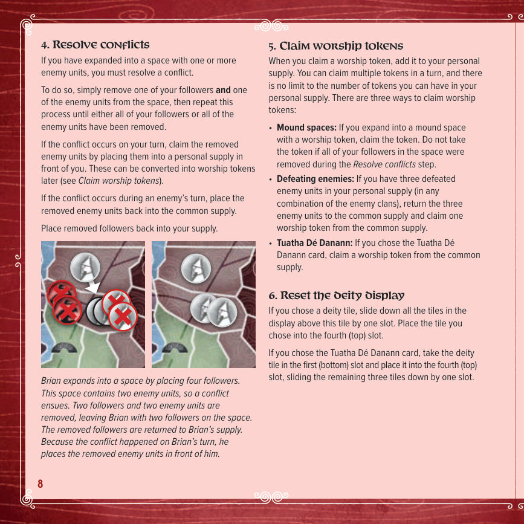
6.5 认领崇拜标记
认领崇拜标记即把它放进你的个人供应区。一个回合内可以认领多枚，个人供应区的数量不设上限。共有三种认领方式：
- 土丘格：如果你扩张进入的土丘格上有崇拜标记，拿走它。但若该格内的信徒在「结算冲突」步骤中全部被移除，则不能拿。
- 击败敌人：个人供应区累计有 3 个被击败的敌方单位（氏族不限、可混搭）时，把这 3 个单位放回公共供应区，从公共供应区认领 1 枚崇拜标记。
- 图阿萨·德·达南：如果你选择的是图阿萨·德·达南卡，从公共供应区认领 1 枚崇拜标记。
6.6 重置神祇展示区
若你选的是神祇板块：把展示区中位于该板块上方的所有板块向下滑一格，再把你选的这块放到第四格（最上格）。
若你选的是图阿萨·德·达南卡：把第一格（最下格）的神祇板块取出放到第四格（最上格），其余三块向下滑一格。
07四位神祇
四位神祇的差别在于扩张距离与附带能力。距离一律指起点到目标的最大格数；「途经格」可以有任何一方的信徒或敌方单位，不影响扩张。
埃里乌 Ériu，土地之神
向距起点 2 格以内的目标扩张。中间那一格可以有敌方单位或对手的信徒。
波安德 Bóand，水之神
向距起点 5 格以内的目标扩张。目标、起点以及所有途经格必须都临同一片水域（海或某一个湖）。途经格可以有敌方单位或对手的信徒。
莫里甘 Morrigan，战争之神
向与起点相邻的目标扩张。扩张之后，你可以立即击败目标格内或与目标相邻的格内共 1–2 个敌方单位，组合方式随意。若这一步把目标格内的敌方单位全部清除，则跳过「结算冲突」步骤。
被击败的敌方单位放进你面前的个人供应区。
达格达 Dagda，创造之神
你可以扩张两次。每次的目标都必须与自己的起点相邻，但两个起点不必彼此相邻。第一次扩张的目标不能作为第二次扩张的起点（两者不能接力）。新信徒可自由分配到这两个目标格。
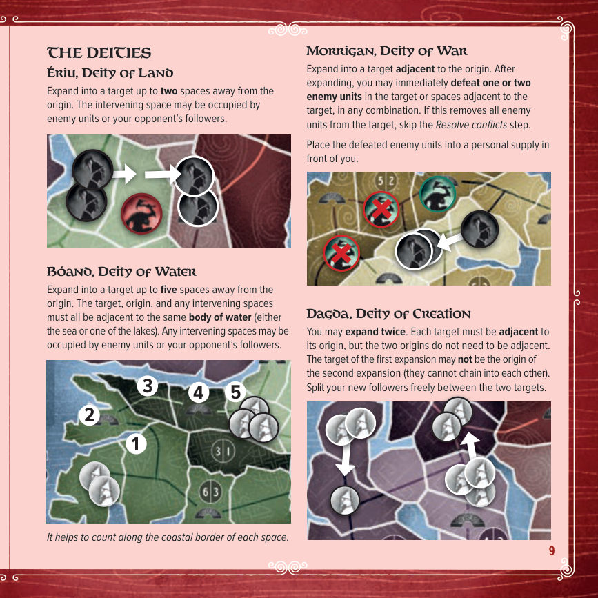
| 神祇 | 领域 | 距离 | 额外能力 |
|---|---|---|---|
| 埃里乌 Ériu | 土地 | 2 格 | 无（途经格可被占据） |
| 波安德 Bóand | 水 | 5 格 | 起点、目标与途经格须临同一片水域 |
| 莫里甘 Morrigan | 战争 | 相邻 | 扩张后额外击败目标或邻格 1–2 个敌方单位 |
| 达格达 Dagda | 创造 | 相邻 ×2 | 可扩张两次，信徒自由分配 |
08敌方回合
敌方回合按顺序执行四步：① 翻开一张敌方卡 → ② 找出该氏族最大的连通群体 → ③ 扩张该群体 → ④ 结算冲突。
8.1 翻开敌方卡
翻开当前时代敌方牌堆最上面一张，正面朝上放进敌方弃牌堆，按卡面上的图标执行（具体见 8.3）。本节规则只涵盖弗摩尔人；特殊敌方氏族的规则见第 12 节。
8.2 找出该氏族最大的连通群体
找出「含至少一个该氏族敌方单位」的最大连通格群。不要求格子之间有小径相连（相邻即可）。这个最大群体才在下一步扩张，较小的群体不扩张。
若有多个同样大的最大群体，选其中单位总数最多的那个。仍然并列时，这些最大群体依次各自扩张一次，先后顺序不影响结果（见 8.3 末的注意事项）。
8.3 扩张该群体
从公共供应区取1 个或 2 个敌方单位（视翻开的卡而定），放到每个同时满足以下三项的格子上：
- 该格与最大群体中的一个或多个格子直接相邻。
- 该格与最大群体中的一个或多个格子有小径相连。
- 该格尚未被任何氏族的敌方单位占据。
敌方单位进入新格的先后顺序不影响结果。
无法扩张时
少数情况下被翻开的氏族可能无法扩张，例如版图上已无该族单位，或已无可扩张的格子。此时把该氏族的 2 个敌方单位放到其要塞标记所在格，然后结束敌方回合：不按卡面结算，也不进行结算冲突步骤。
8.4 结算冲突
若任何含有玩家信徒的格子里有敌方单位，按 6.4 的规则结算冲突，先后顺序不影响结果。
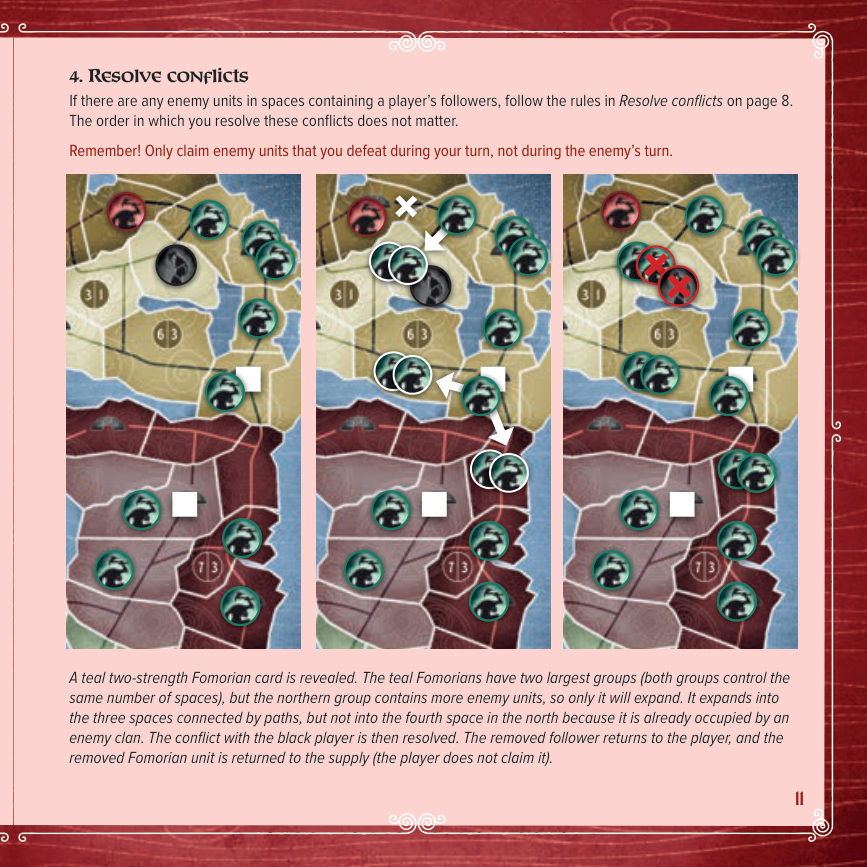
09时代末计分
当牌堆中最后（第 5）张敌方卡被翻开并结算完毕，时代结束，此时进行全部计分。
计分时把三个敌方氏族视为单一第三派系，用红色分数标记记录其总分；两位玩家用各自颜色的玩家标记记录。
逐个检查 11 个地区（建议在每个地区先放一枚标记，计完就移除）。对每个地区，按白、黑、敌方三个派系在该地区所有格子内的单位总数排名。敌方要塞标记不计为单位。
排名与得分
- 单位数最多与第二多的派系，各得该地区标明的分数。
- 若某地区只有一方在场，它仍然只得第一名的分数。
- 并列第一：把第一名与第二名的分数相加，由并列各方均分（向下取整），此时不再颁发第二名。
- 并列第二：由并列各方均分第二名的分数（向下取整）。
要塞加成
每个含有敌方要塞的地区，玩家若在该地区拥有严格多数（即信徒数多于其他任一派系，不能并列）额外得 2 分；若出现并列，则不加分。敌方派系不会因为控制要塞而得分。
「4 | 2」绿色地区：Ciara 有 2 名信徒，敌方有 2 个单位，两者并列第一，各得 3 分（4+2=6，双方均分）。
「3 | 1」绿色地区：Cillian（白方）有 2 名信徒，Ciara 有 1 名，Cillian 得 3 分，Ciara 得 1 分。
计分情形速查
| 情形 | 处理方式 | 示例 |
|---|---|---|
| 正常排名 | 第一名得第一项分，第二名得第二项分 | 「6 | 3」地区：6 分与 3 分 |
| 只有一方在场 | 只拿第一名分数，第二名作废 | 「3 | 1」地区：仍只得 3 分 |
| 并列第一 | 第一名 + 第二名分数合并，并列各方均分（向下取整），不再颁发第二名 | 「4 | 2」地区：6 ÷ 2 = 各 3 分 |
| 并列第二 | 第二名分数由并列各方均分（向下取整） | 「6 | 3」地区：3 ÷ 2 = 各 1 分 |
| 要塞奖励 | 玩家在该地区拥有严格多数（不并列）时额外 +2 | 6 + 2 = 8 分 |
| 要塞区并列 | 不加分；敌方控制要塞也不加分 | — |
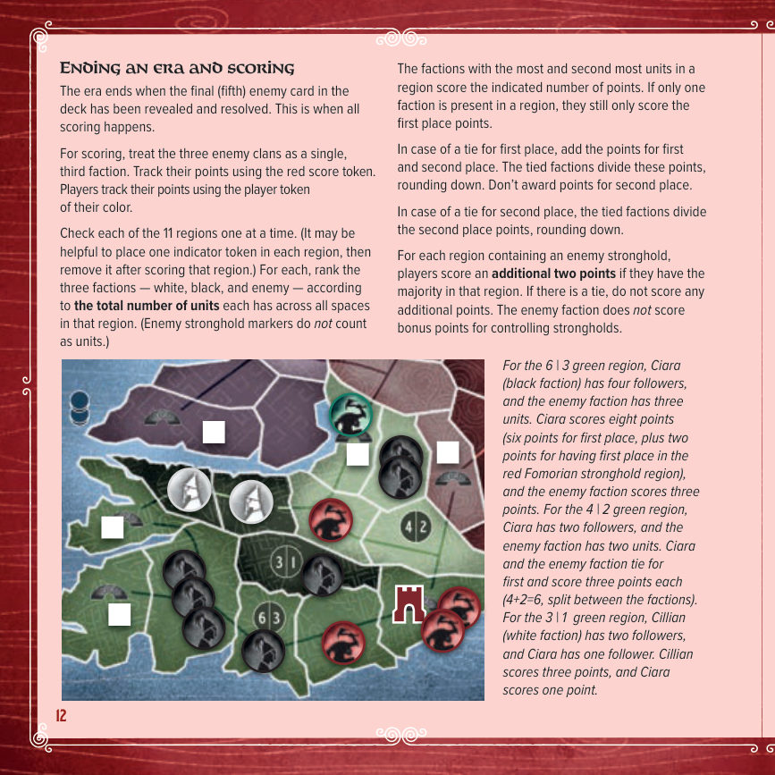
10游戏结束
第二时代计分完毕，游戏结束，分数最高的派系获胜。
- 若平手涉及敌方派系，敌方获胜。
- 若两位玩家平手，比较各自剩余的崇拜标记数量，多者获胜。
- 若仍然平手，两位玩家共享胜利。
11追加规则：替代起始位置
这套规则让玩家与敌方都可以使用替代的起始位置。
- 设置阶段，从地图卡上的 5 种标准设置中选一种（注意每张卡都是双面）。其余地图卡放回盒中。
- 把敌方要塞标记放进标示的格子；按所选氏族的设置规则摆放初始敌方单位（见第 12 节各氏族）。
- 玩家按以下顺序轮抽四个标示的起始格：白方选 1 格 → 黑方从剩下的格里选 2 格 → 白方拿最后 1 格。
- 双方在各自的两个起始格各放 2 名信徒。
- 每个无人占据的土丘格放 1 枚崇拜标记。
若某个分数标记到达 50 分，把它留在 50 格，另取一枚放到 0 格，之后的得分由这第二枚继续推进。
第一时代计分后开始第二时代；第二时代计分后进入第 10 节的游戏结束流程。
12特殊敌方氏族
以下规则让你使用特殊的敌方氏族。这些规则必须与第 11 节的替代起始位置规则同时使用。
建议第一次先用1 个特殊氏族 + 2 个弗摩尔氏族；熟练后可改用 2 个甚至 3 个特殊氏族。无论怎样组合，场上永远正好是 3 个氏族。
设置时，找出所选氏族的敌方卡与要塞标记，并把对应单位整局翻到该氏族面朝上；其余敌方配件放回盒中。
12.1 埃伦·特雷亨德 Ellén Trechend（三头兽）
设置：要塞格放 2 个本单位，与要塞经小径相连的每个相邻格放 1 个。
规则：翻到单图标卡时正常扩张。翻到双图标卡时，在与最大群体相邻（不只是有小径相连）、且无任何敌方单位的每个格子里各放 1 个埃伦·特雷亨德单位。其余一切按标准规则处理。
12.2 弗摩尔人 Fomorians
设置：要塞格放 2 个同色弗摩尔单位，与要塞经小径相连的每个相邻格放 1 个。
规则：完全按第 8 节的标准敌方回合规则执行。
12.3 报丧女妖 Banshees
设置：要塞格放 3 个报丧女妖单位。
规则：每张报丧女妖卡都画出地图上的一个区块。抽到时，在标示的每个格子里各放 1 个本单位——即使该格已被其他敌方氏族占据。两个敌方氏族可以共存。（其他敌方氏族仍按正常扩张规则，不能扩张进已有报丧女妖单位的格子。）其余一切按标准规则处理。
12.4 奥伊利菲什 Oilliphéist（海蛇）
设置：要塞必须放在临海（环绕爱尔兰的水域）的格子上。要塞格放 2 个单位，经海路相连的每个相邻格放 1 个。
规则：翻到单图标卡时，找出奥伊利菲什单位的最大群体，在与该群体相邻且经海路相连的每个格子里各放 1 个单位。若该格已有敌方单位（本族或其他氏族），跳过此格，沿海岸线把新单位放到下一个没有敌方单位的空格。
- 双图标卡：把上述过程执行 2 次。
- 三图标卡：把上述过程执行 3 次。
在所有新的奥伊利菲什单位放完之后，才结算冲突。其余一切按标准规则处理。
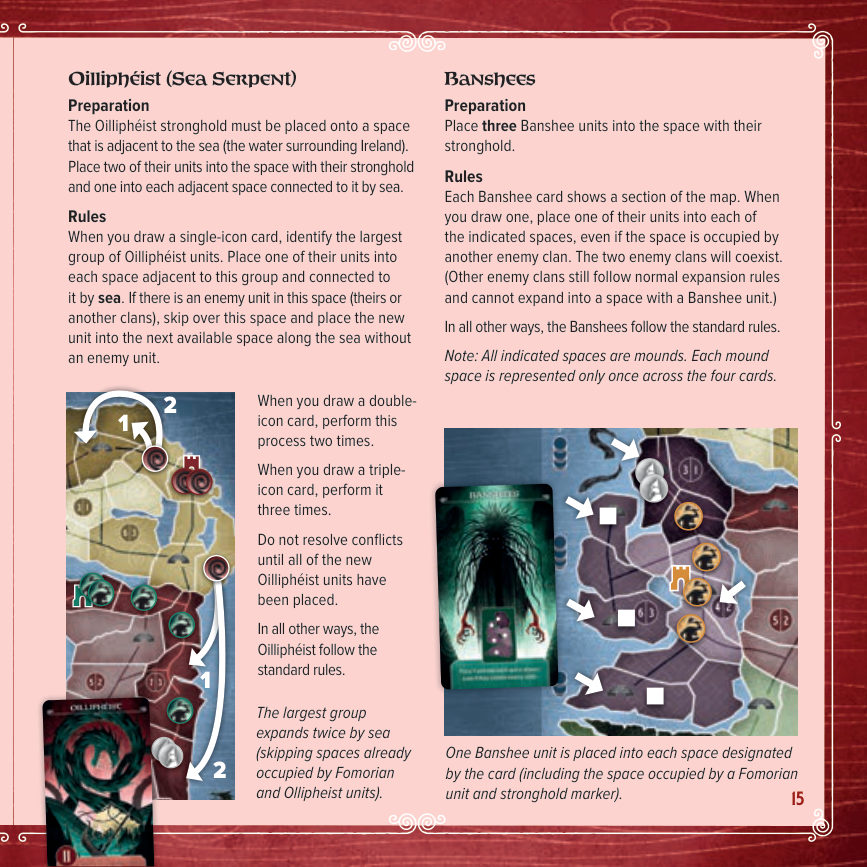
13玛格梅尔扩展
本扩展需另行购买，可直接在官方商店 www.BitewingGames.com 购买。图阿萨·德·达南的氏族为翡翠岛的主导权厮杀，众神已经注意到这一切，于是送来更强的力量……以及更强的敌人。
氏族之争不再只为凡间王国，也为了 玛格梅尔（Mag Mell）的原野——最勇武强大者将在那里与众神同住，获得永恆的安宁与喜乐。响应荣耀的召唤，去夺取你的王冠吧，族长，无论此世还是彼世。
13.1 扩展配件
| 配件 | 数量 | 说明 |
|---|---|---|
| 地图卡 | 2 张 | 双面，提供 4 种新地图设置 |
| 玩家帮助卡 | 2 张 | |
| 神祇板块 | 1 块 | 卢格（Lugh），诡计之神 |
| 敌方要塞标记 | 3 个 | |
| 敌方卡 | 12 张 | 每个新氏族 4 张 |
| 营地标记 | 10 个 | 巴洛尔之军用 |
| 传送门标记 | 10 个 | 埃斯·西用 |
| 灵魂标记 | 10 个 | 巴纳纳赫用 |
| 敌方单位 | 60 个 | 每个新氏族 20 个 |
营地、传送门、灵魂标记与敌方单位不设数量上限，用尽时请找合适的替代物。
13.2 新起始位置与新神祇
扩展提供 4 种新地图设置，设置时可用它们替代基础游戏的地图卡。
扩展还提供一位新神祇，可替代基础游戏四位神祇中的一位。第一次游戏时，建议用他替换 达格达。
卢格 Lugh，诡计之神
向与起点相邻的目标扩张。扩张之后，在版图上任意选一格，把该格内的 1 个敌方单位移到与它相邻的一格。
卢格的升级方式不同：不给额外信徒，而是解锁额外能力。
- 拥有小升级：可以把所选格内的全部敌方单位移出（不止 1 个）。
- 拥有大升级：可以把敌方单位（若同时拥有小升级，则为全部单位）移到任意相邻的一格。
按落点结算：
- 落点有自己的信徒：结算冲突，并收取被击败的敌方单位。
- 落点有对手的信徒：结算冲突，被击败的敌方单位与信徒都放回供应区，双方都不收取。
- 落点有其他敌方单位（同族或异族）：共存。
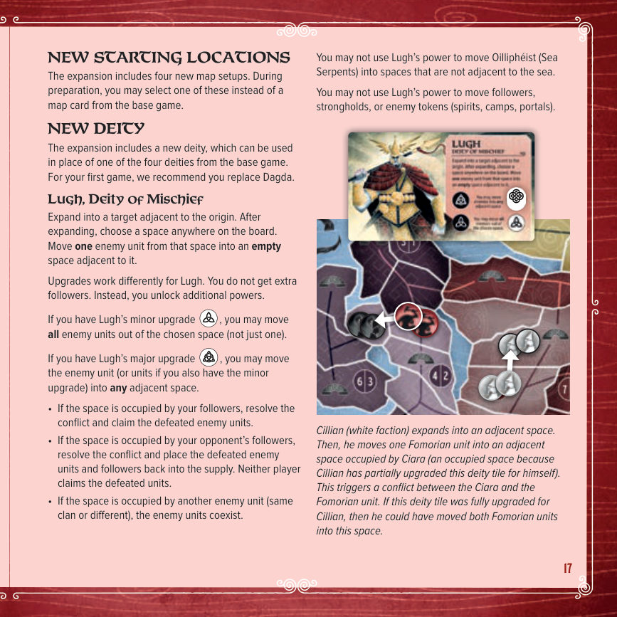
13.3 新敌方氏族
扩展提供三个特殊敌方氏族，设置流程按第 12 节执行。三者各自的标记用法如下。
巴纳纳赫 Bánánach（战场幽魂）
设置：要塞格放 2 个单位，与要塞经小径相连的每个相邻格放 1 个。
- 单图标卡：正常扩张，但每个格子里放 1 个单位 + 1 枚灵魂标记。若该格已有灵魂标记，就不再放第二枚。
- 双图标卡：正常扩张，但每个格子里放 2 个单位，不放灵魂标记。
计分时，把灵魂标记的数量加到敌方单位数上，作为敌方派系在该地区的单位总数。其余一切按标准规则处理。
巴洛尔之军 Balor's Army（弗摩尔人之王）
设置：要塞格放 2 个单位，与要塞经小径相连的每个相邻格放 1 个。
- 单图标卡：正常扩张。
- 双图标卡：正常扩张，但每个格子里放 2 个单位 + 1 枚营地标记。若该格已有营地标记，就不再放第二枚。
计分时，任何派系（玩家与敌方）每占据一个含营地标记的格子就得 1 分，无论该地区是否正常给他们分数。其余一切按标准规则处理。
埃斯·西 Aos Sí（异界之民）
设置：要塞格放 2 个单位，与要塞经小径相连的每个相邻格放 1 个。并在被其单位占据的每个地区各放 1 枚传送门标记（放在地区内哪一格不限）。
- 单图标卡：正常扩张。然后给本次扩张进入、且尚无传送门标记的每个地区各放 1 枚传送门标记（地区内哪一格不限）。
- 双图标卡：在每个有传送门标记的地区里，对每一个没有敌方单位的格子各放 1 个埃斯·西单位。（传送门在地区内的位置无关紧要：每个没有敌方单位的格子都得到 1 个单位。）
其余一切按标准规则处理。
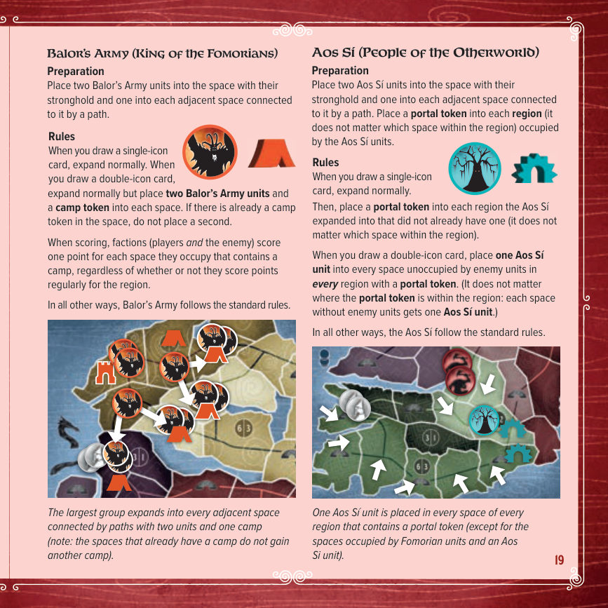
14单人／合作变体
Moytura 设计为 2 人对战，但只需几处小改动，就能变成优秀的单人或合作体验。
设置
按正常流程设置，再按想要的难度做以下调整：
| 难度 | 调整 |
|---|---|
| 新手 | 不做任何改动 |
| 标准 | 每个已有敌方单位的格子，额外放 1 个同氏族敌方单位 |
| 最高 | 每个已有敌方单位的格子，额外放 2 个同氏族敌方单位 |
进行游戏
按正常规则进行，但有以下改动：
- 计分时：每个含有敌方要塞的地区，若敌方派系在该地区拥有严格多数，敌方额外得 2 分；并列则不加。也就是说，现在任何派系（玩家或敌方）都能在含敌方要塞的地区拿到这 2 分加成。
- 游戏结束时：若敌方派系的分数比白方、黑方都低，单人玩家或合作玩家获胜。若敌方并列最低，或敌方分数高于白方或黑方，则敌方获胜。
单人操作两方
你同时操作白方与黑方，按正常回合顺序行动。为方便追踪回合与轮次状态，各取 1 枚该色玩家标记放在面前（不要用供应区里的标记）。某一派系行动时，把它的玩家标记放在所选神祇板块或卡的图案上；本轮结束（白、黑、敌方三方都行动完毕）后，收回这两枚放在图案上的标记。
开局取 2 枚崇拜标记，之后获得的也全部放进一个共享供应区，白黑两方都可自由使用。小心：如果把崇拜标记全花在一方身上，另一方可能就跟不上计分节奏了。
被你击败并收取的敌方单位也放进同一个共享供应区，仍然按正常规则用 3 个被击败的敌方单位换 1 枚崇拜标记。记住：只收取自己回合击败的敌方单位，敌方回合击败的不算。
15制作名单
官方订阅与更新：bitewinggames.com/subscribe